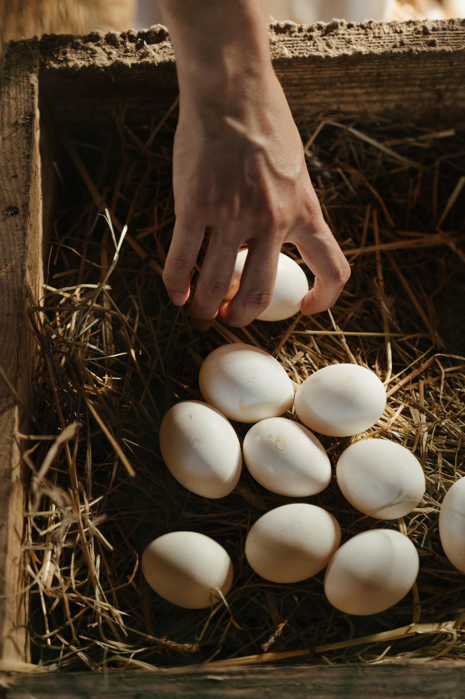

My favourite Recipe
Eggs in pan
This Recipe is the one i cooked the most during my studies at Justus-Liebig-University in Gießen, Germany.
I highly recommend this recipe for the purpose of a tasteful explosion of flavours in your mouth and a bigger wallet.
Also you have your dinner ready in no time.
In Addition to the eggs, you should go with 2 slices of good bred.
Prep.: 5-10 mins
Cook: 5 mins
Total: 10-20 mins
Servings: 1
What you'll need:
- A pan
- 4 eggs
- 2 teaspoons of coconut oil
- 1 and 1/2 teaspoons of salt
- 1/2 red pepper
- 1/2 teaspoons of red pepper and garlic powder
- 2 cloves of garlic
- 1 big tomato
- 1/2 onions
Directions:
- heat the pan slowly
- Cut and prepare the tomatos, onions, red peppers and garlics
- Pour the coconut oil in the heated pan
- Crack the eggs in the pan
- Stir the eggs for until they start to become (2 mins) clear white and then add your prepared vegetables and spices too into the pan
- Stir for 3 more minutes and then serve
Valuable egg recommendation:
I don't know why, but white eggs taste a lot better than brown eggs. Try it out!
